Could Crypto be the Only Way?
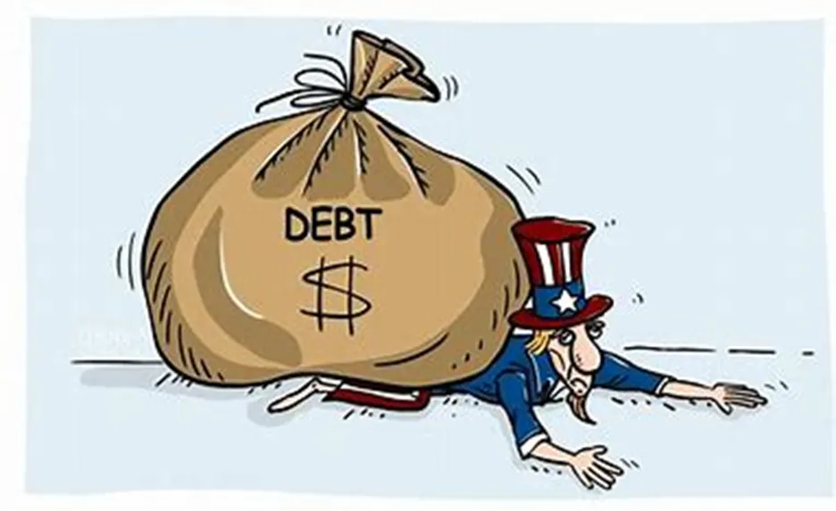
As I have often written about in the past, Crypto is an amazing new technology that has a myriad of real-world use cases. Not surprising therefore that the number of Crypto users and use cases is growing exponentially. What is more surprising is just how few people are aware of this.
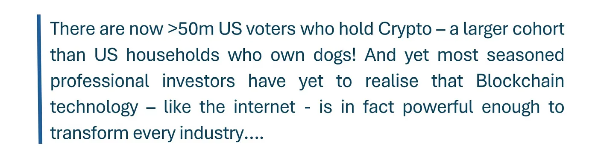
But it gets better: arguably the biggest risk we face as investors is centred upon the astronomical levels of US national debt, which — given the dollar's reserve currency status — has managed to reach an eye-watering $35trillion, with interest payments running at $1trillion every year. Few experts see any palatable solutions available to the authorities given how painful and unpalatable an actual reset would be to ordinary people. To avoid a currency crisis, US authorities are therefore continuing to print money to pay their obligations, exacerbating the debt problem further….
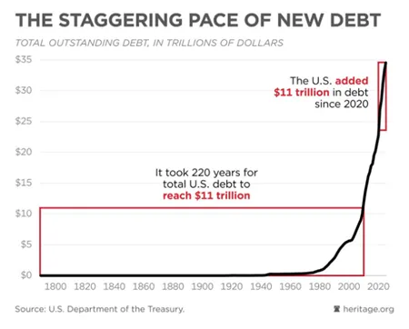
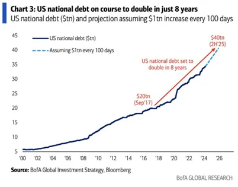
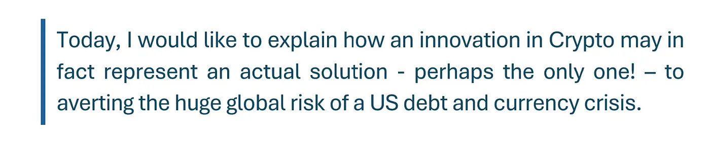
For context, let's look at the history of payments. It is perhaps pretty well understood that Bitcoin was designed to provide a new, more efficient and secure payment system. People think of it as "separate" from what we know of as "money" but if we look at the origins of Visa, we see that modes of payment have always been evolving:
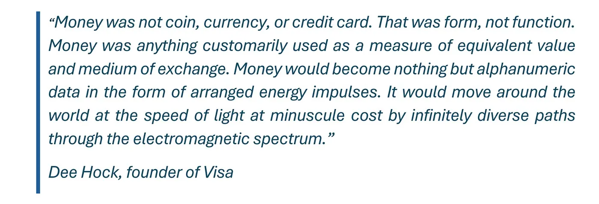
When Visa was founded over fifty years ago by Dee Hock, he wanted it to become the world's premier system for the exchange of electronic value regardless of currency, form factor, or underlying technology. Today, Visa is a global payments technology company that builds and operates products enabling consumers, merchants, financial institutions, FinTech's and governments to securely move value across the world. Visa has more than 4.5 billion cards worldwide, and their products collectively reach 130+ million merchant locations, approximately 14,500 financial institutions, and 200+ countries and territories. In the past year alone, they have facilitated over 296.8 billion transactions and $15.5 trillion in payment volume.
Given this context, it's perhaps not surprising that Visa and other giant payment providers like Stripe and PayPal are embracing Crypto: it simply represents the next innovation in payments given it is more efficient, secure, reliable, global and convenient than the status quo.
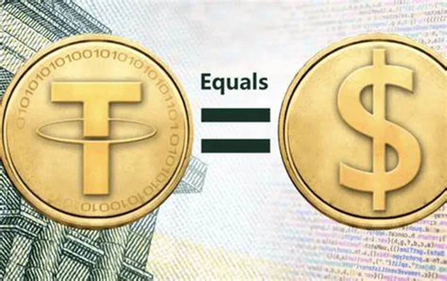
Bitcoin was founded in the aftermath of the Global Financial Crisis in 2008 which made it clear that our financial system architecture — centred on trusted intermediaries and fractionalised bank deposits — is in fact pretty vulnerable and not really suited to the digital age. Bitcoin's decentralised and tamper-proof design was seen as a better alternative, capable of addressing the existing financial system's flaws. At the time, it was envisaged that the majority of payments across the world would gradually migrate to Bitcoin's superior, more efficient and lower risk digital network.
In my decades of technology investing, what I have found most fascinating is that it is always a surprise how a new technology evolves after it is launched. The original idea is invariably quickly innovated and improved upon to better adapt it for the way customers want to use it.
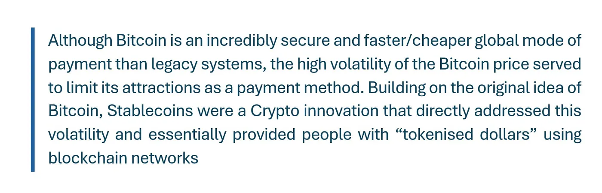
Stablecoins can be explained as tokenised representations of fiat currencies — currently mostly dollars — circulating on blockchains. So far, Stablecoins are unambiguously the "killer app" of Crypto: there are over $160 billion worth of Stablecoins in circulation today, up from single digit billions as recently as 2020. Over 20 million addresses make a Stablecoin transaction on public blockchains every month. And in the first half of 2024, Stablecoins settled over $2.6 trillion dollars' worth of value. Important to note that there is an insatiable demand for US dollars given that 87% of world debt is denominated in USD. It's just a cheaper and quicker way of sending and receiving dollars for which there is obviously huge demand.
Stablecoins have a vast array of use cases: they are used for currency substitution (to flee volatile or depreciating local currencies), as a dollar-based bank account alternative, for b2b and consumer payments, for access to various forms of yield, for remittances and for trade settlement. Stablecoins are particularly appealing when dollar banking is non-existent or hard to access, in countries exhibiting high inflation, or countries with poor or costly access to fiat transactional networks. In emerging markets for example, adoption of Stablecoins for payments, currency substitution, and access to high quality forms of yield is accelerating.
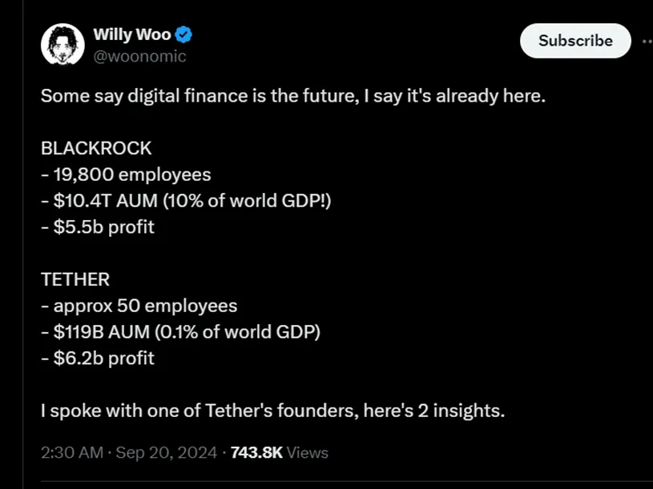
Tether is the company that issues the USDT Stablecoin (commonly known as "Tether"). It remains the largest and most widely utilised Stablecoin, with a market share around the 70 percent range.
Tether's recent results were astounding: they show that Tether made more money than BlackRock, the World's largest asset manager! Tether's annual profit in 2023 was $6.2 billion. This is around $700 million more than BlackRock made in 2023. As of the first quarter of 2024, BlackRock's AUM, the total market value of the investments it manages, was a mind-boggling $10.5 trillion. At the same time, BlackRock is a public company itself with stock that trades on the New York Stock Exchange. BlackRock's market cap, or the total dollar amount of all the company's stock, is about $118 billion. How is it possible that a Stablecoin issuer with around 100 employees made more money than the World's largest mutual fund with 20k employees? It's because Tether's business is unbelievably simple: you give them dollars. They give you Tether tokens which are essentially entries on the blockchain. They use your dollars to buy US bonds yielding 5% so this is their profit! They use a small portion of the yield to buy Bitcoin for their balance sheet.
The number of people wanting these USDT tokens is growing exponentially, and therefore, it is not only an extremely profitable business model but one which has grown rapidly. Now perhaps you understand why BlackRock has taken an interest in Crypto…
The reason why Stablecoins are so overwhelmingly dollar-based is that the US dollar is the global reserve currency so demand for dollars is significantly higher than for any other currency.
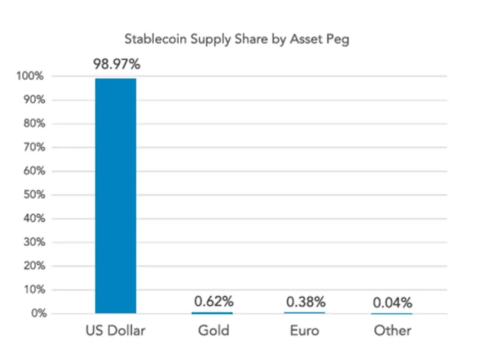
The US regulators have long treated Crypto as an existential threat to their control of the financial system and the Dollar's dominant position. But the spectacular growth of dollar Stablecoins is in practice doing just the opposite: it has had the perhaps unintended benefit of keeping more countries and more users in the dollar system!
Another side benefit is that when individuals in emerging markets use dollar-linked Stablecoins, they are indirectly purchasing US debt instruments, such as treasury bonds. This new "buyer" of US paper is very much welcome at a time of huge paper issuance!
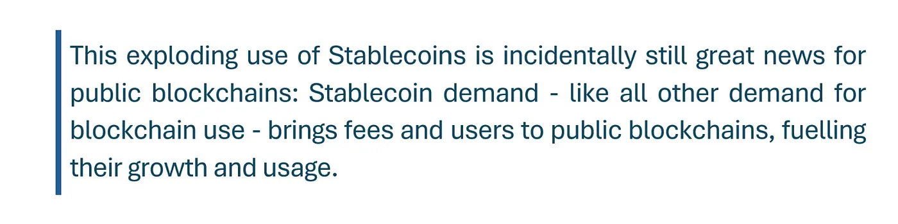
When Stablecoin settlement volumes are compared to native Crypto assets, a story emerges of the "dollarization" of blockchains. While historically Bitcoin and Ethereum have represented the primary media of exchange on public blockchains, Stablecoins — and almost exclusively dollar-linked Stablecoins — have steadily gained market share.
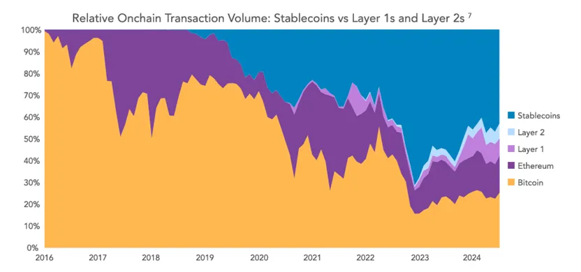
What's more, Stablecoins are now so well accepted that they are expanding beyond dollars: in recent months, various new forms of Stablecoins have emerged, as various regulatory domiciles have passed clarifying Stablecoin legislation, hoping to attract issuers. Some of the most proactive jurisdictions in creating regulatory frameworks for Stablecoins include the EU, Singapore, Dubai, Hong Kong, and Bermuda. So the popularity and proliferation of Stablecoin use is only just getting started.
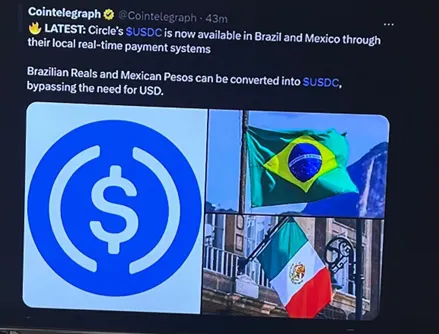
Many people — especially outside of the Crypto sector — assume that Central Bank Digital Currencies ("CBDC's") are preferable to and will ultimately supersede Stablecoins. Research into CBDCs has been going on around the world for the last decade and has increased rapidly over a short space of time. In 2020, only 35 countries were exploring a CBDC — now, according to the Atlantic Council, the figure stands at 134. But, for all of the countries exploring a CBDC, only three have fully implemented one: the Bahamas, Nigeria and Jamaica and none of these have been successful to date.
The appeal from the government's perspective is obvious: as a fully digital form of a country's currency, they're essentially the final frontier for a completely digital payments system.
Blockchain tech has the potential to transform the way we bank, but when you dig down a little deeper into CBDCs, it becomes clear that implementing them on a global scale isn't feasible.
That's because countries have to overcome so many hurdles. This is particularly true in the U.S. While global CBDCs would rely on more than just Uncle Sam, it's a fundamental cog in the grand vision. And the Fed is nowhere near issuing a digital dollar.
First, you'd have to deal with public opinion; CBDCs are just too contentious. The consensus worldwide is pretty negative, but nowhere more so than in the U.S. As of May 2023, only 16% of Americans supported the idea of a CBDC (Cato Institute), citing fears of government control. In other countries, CBDCs are less contentious and partisan. Still, according to the CFA Institute, 34% still believe that central banks should not issue digital versions of their currencies.
These digital currencies have become political tools, and not much more. Republicans, including Donald Trump and House Majority Whip Tom Emmer, are staunchly opposed. And, even though Democrat officials have researched a U.S. CBDC, it's looking unlikely that a Harris-Walz administration would pursue one. I don't believe that either side will commit to a CBDC, further stalling global implementation.
One of the most compelling arguments for implementing global CBDCs is that they will advance cross-border payments. Our current systems move slowly and cost an excessive amount to operate. It's estimated that in 2020, $23.5 trillion was transferred across borders, costing a colossal $120 billion to facilitate (Intereconomics), a ridiculous expense.
So, I understand why, if you view CBDCs as a tool to bring these costs down, you'd favour pushing along their development. But the fact remains that to fix cross-border payments through CBDCs, you'd need to rely on solid worldwide geopolitical relationships. And, unfortunately, we don't have those. The world is too fragmented, too unruly, to allow CBDCs to be implemented globally. Plus, we'd need to rethink entire financial structures, develop new regulatory frameworks, cybersecurity and data safeguards, and alter our approach to monetary policy. There isn't the appetite to warrant these changes on a global scale.
At the end of the day, these factors will limit CBDCs around the globe. It's hard to envisage a world where the benefits outweigh the challenges.
It is important to understand that Stablecoins are far different from Central Bank Digital Currencies. For all the talk of central banks launching digital versions of national currencies, only three projects have fully launched and none of the three have met with much success or high adoption. For a host of reasons, we likely won't see a global rollout of these difficult-to-build and not-particularly-wanted initiatives, says Fiorenzo Manganiello, co-founder and managing partner of investment firm LIAN Group.
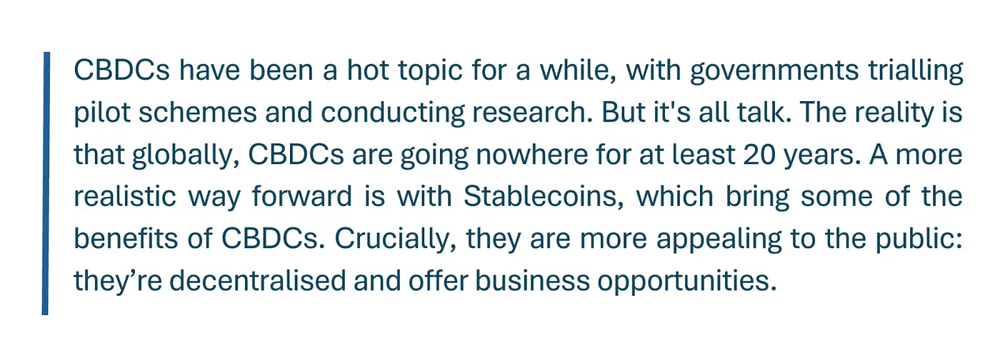
Investors like me who assess the macroeconomic backdrop as part of their investment process see the US debt situation as a pretty frightening risk, perhaps the biggest one we face: with US debt already at astronomical levels and no prospect in sight of it being materially reduced no matter who comes to power, the US desperately needs to find more demand for their bills, bonds and treasuries. This is especially the case because other sovereigns like China and Japan who have traditionally been big buyers of US treasuries are massively reducing their appetite for this paper…..
Big picture: this declining demand for dollar paper is reducing the dollar's reach into the world which is unwelcome as it would ultimately reduce the economic power of the US and may even presage a currency crisis! What's more, a US currency crisis would be terrible for the US but a disaster for most other less powerful countries. What is clear to me is that digitisation as a whole is not only good for keeping the dollar embedded into the global economy as it digitises but Stablecoins actually produce a natural new source of demand for US debt! This new demand is now critical as the US needs to replace decreasing demand by other sovereigns.
Paul Ryan, former speaker of the United States House of Representatives has written a very insightful OpEd on this very subject and in fact calls for the regulation of Stablecoins to promote their use:
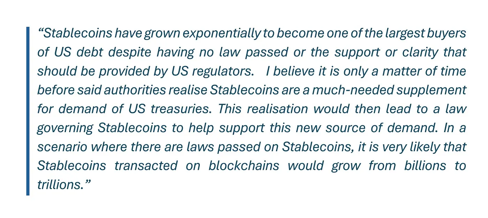
The scenario that Ryan is painting would obviously mean a huge uplift of fees and users for Crypto! But you may ask: why would the authorities do that? Because if we actually have a law governing Stablecoins, that will help avert a failed treasury auction! Otherwise, the risks of a US debt crisis would play out something like this: we could see a scenario when the Fed's done cutting interest rates — let's say in 2026 — and at that point it's not inconceivable that we have some Bond auction failures. That's classic currency crisis territory….of course, the Federal Reserve could then step in to fulfil that auction, but it would then be obvious to market participants that the US is in fact just monetising its debt. Typically then you could get a run on the dollar and a full-blown debt crisis on your hands. Such a situation would undoubtedly hurt innocent citizens, it would be very bad for the dollar and for the country and for these reasons the authorities should rationally welcome anything that may help them avoid this risk.
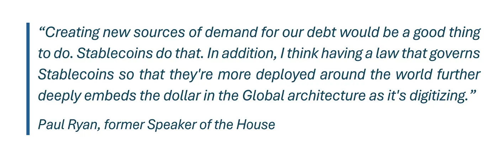
Tether's second quarter 2024 audit showed that its reserves amounted to $118.4 billion, exceeding liabilities by $5.3 billion, of which more than $97.6 billion were U.S. Treasuries. This makes Tether the 18th largest holder of U.S. Treasuries in the world, surpassing countries such as Germany, the UAE and Australia. Tether has worked with 180 institutions in 45 jurisdictions around the world, freezing approximately 1,850 wallets involved in the case and assisting in the recovery of more than $113 million in assets.
Despite being one of the most powerful technologies I have ever come across, Crypto continues to suffer from an "image problem": it's misunderstood, seen as only the preserve of bad actors and most people don't see any use for it. The upside of this level of misunderstanding is that Crypto remains extremely attractively valued — in my opinion, it is the sector likely to show spectacularly high returns in the years ahead as users continue to grow exponentially and as every industry is transformed by its efficiency. How ironic therefore that this small, misunderstood and easily dismissed sector could also in fact hold the key to solving the biggest macro risk we face as investors!